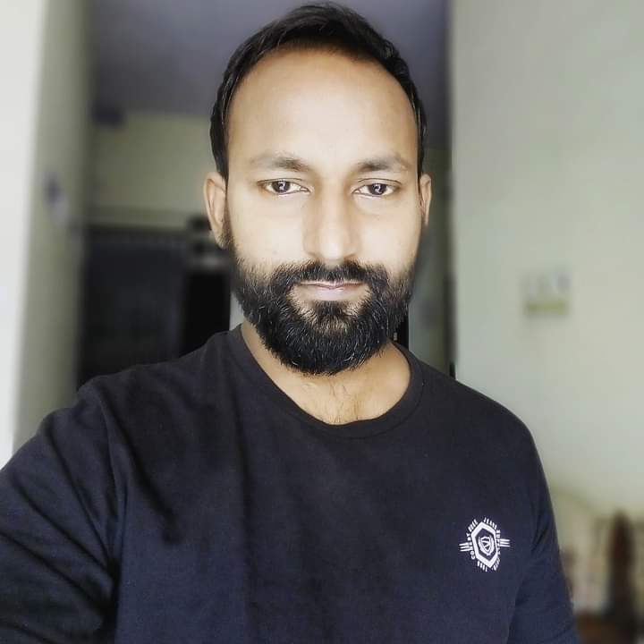

RESUME
Akash Verma
Software Testing And Develpoment
tech.akash0308@gmail.com
9718236899
Noida Sector-45
Software Testing And Develpoment
tech.akash0308@gmail.com
9718236899
Noida Sector-45
Seeking a challenging role where I can leverage my proficiency in software testing and development to create seamless and engaging web experiences. Eager to contribute my creativity and technical skills to a dynamic development team, ensuring the delivery of intuitive and responsive frontend solutions that enhance user satisfaction and drive overall project success.
Graduate In Electronics And Telecommunication Engineering.
Grade:- 7.65cgpa
Passout:- 2012
Employed in the industrial sector for more than four years, with a focus on process optimization and operational efficiency. Managed diverse projects, ranging from facility upgrades to implementing lean manufacturing principles. Adapted to technological advancements to stay competitive in the evolving industrial landscape.
While preparing for UPSC, I undertook rigorous self-study, covering a wide range of syllabus.
Currently freelancing in Software Testing And Development